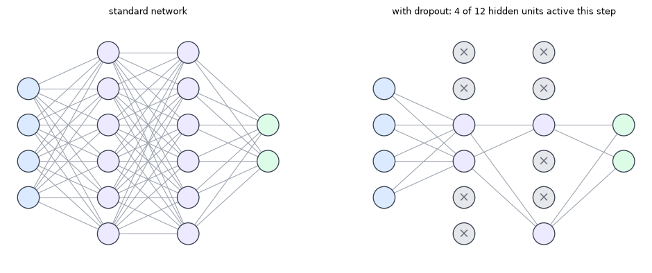

Batch Normalisation & Dropout
Two must-haves inside a modern CNN block. Batch norm keeps activations well-scaled during training; dropout regularises against overfitting. Both are worked by hand here, including the running averages that make batch norm work at inference time, and both depend on switching between train() and eval().
01 Batch normalisation — the problem it fixes
The problem
During training, each layer's input distribution keeps shifting because the layer below is being updated. This is called internal covariate shift. Downstream layers have to constantly re-adapt to a moving target.
Consequences:
- Slow convergence — learning rates must be small to avoid overshooting.
- Weight initialisation becomes critical — a bad init explodes.
- Deep networks are hard to train — the shift compounds through layers.
(That is the explanation in the original paper, Ioffe & Szegedy, 2015. Later work, Santurkar et al., 2018, argues the bigger effect is that batch norm makes the loss surface smoother, so larger steps are safe. Either way the practical benefits below are real.)
The fix in one line
Normalise each layer's inputs so they have (approximately) zero mean and unit variance across the mini-batch, then let the layer learn its own preferred shift and scale.
Three concrete benefits
- Allows much higher learning rates.
- Reduces the need for careful initialisation.
- Partially regularises — the batch-level noise acts like a weak dropout.
02 The BN formula, step by step
Steps 1-2 — compute batch statistics
For a mini-batch of m activations B = \{x_1, \ldots, x_m\}:
Steps 3-4 — normalise, then scale and shift
- \varepsilon is a tiny constant (e.g., 10^{-5}) for numerical stability.
- \gamma, \beta are learnable parameters, one of each per channel.
Why the scale-and-shift
Pure normalisation would force every layer's output to be zero-mean unit-variance — too restrictive. \gamma and \beta let the layer choose to undo the normalisation if that's what the data needs. Usually it doesn't, but the capacity is preserved.
03 Worked example — four activations, by hand
The data
Scenario: 4 images in the mini-batch, each with a 2×2 feature map on one channel. Activations at a specific spatial location (i, j):
Step 1 — batch mean
Step 2 — batch variance
Step 3 — normalise
Result: \hat{B} \approx \{0.243, -1.461, 1.339, -0.122\}. Mean ≈ 0, std ≈ 1.
Step 4 — scale and shift
With learned values \gamma = 2.0 and \beta = 0.5:
Each channel has its own (\gamma, \beta). In a conv layer with 64 channels, you have 64 scales and 64 shifts — 128 extra learnable parameters.
Conclusion
Whatever the upstream layer does next epoch, the next layer still sees ~zero-mean, ~unit-variance inputs. Training becomes stable and fast.
04 BN in CNNs — per-channel across (N, H, W)
The key difference from MLP BN
For MLPs, BN normalises across the batch dimension only. For CNNs, batch norm is applied per channel, across the batch AND spatial dimensions.
For a feature map of shape (N, C, H, W):
- Compute \mu, \sigma^2 per channel, averaging over N \cdot H \cdot W values.
- Each channel has its own \gamma, \beta — total of 2C learnable parameters.
Why per-channel
Each channel represents one learned feature. It makes sense that the "edge detector" channel and the "colour blob" channel have different scales — but within each channel, the statistics should be stable across the batch and across spatial positions.
Variants for different situations
| Normalisation | Normalises over | Used in |
|---|---|---|
| BatchNorm | (N, H, W) per channel | CNNs (default) |
| LayerNorm | (C, H, W) per sample | Transformers |
| GroupNorm | (\text{group}, H, W) per sample | Small batches |
| InstanceNorm | (H, W) per sample per channel | Style transfer |
More on these in note 09.
05 Running averages — train vs inference
The problem
- Training — mini-batch of 32 or 64. Batch stats (\mu_B, \sigma_B^2) are reliable.
- Inference — maybe only 1 image. \mu_B = x_1, \sigma_B^2 = 0. Normalisation would output
(x - x) / 0. Useless.
The fix — exponential moving average
During training, maintain running estimates \mu_{\text{running}}, \sigma^2_{\text{running}} updated by exponential moving average (EMA):
Typical momentum: \alpha = 0.1.
Numerical walkthrough
Starting from \mu_{\text{running}} = 0, \sigma^2_{\text{running}} = 1, with \alpha = 0.1:
Batch 1 (\mu_{B_1} = 2.0, \sigma^2_{B_1} = 0.5):
Batch 2 (\mu_{B_2} = 3.0, \sigma^2_{B_2} = 0.8):
After many batches, the running estimates converge to the population statistics. At inference, we use those.
Inference with the running statistics. Suppose training ended with \mu_{\text{running}} = 3.0, \sigma^2_{\text{running}} = 0.675, \gamma = 2.0, \beta = 0.5, and a single test image gives the activation x = 2.5:
A stable answer, whatever the batch size, even 1.
Two practical details: PyTorch's momentum argument is this \alpha (default 0.1), and it updates the running variance with the unbiased batch variance (divided by m - 1), while normalising the batch itself with the biased one (divided by m).
06 BN implementation details
PyTorch nn.BatchNorm2d parameters
nn.BatchNorm2d(
num_features=64, # number of channels
eps=1e-5, # numerical stability constant
momentum=0.1, # EMA momentum
affine=True, # whether to learn gamma, beta
track_running_stats=True, # whether to track running stats
)Train vs eval
model.train() # use batch statistics model.eval() # use running statistics
Forgetting to call .eval() at inference is one of the most common CNN bugs — the model gives different (worse) predictions on single images.
Where in the block
The canonical modern conv block:
Conv2d -> BatchNorm2d -> ReLU
Conv → BN → ReLU, as in the original paper, is the standard: BN keeps the non-linearity's input well-scaled. Some people put BN after the ReLU and report similar results. The conv layer before BN can drop its bias (bias=False), since BN's \beta does the same job.
07 Dropout — the regularisation technique
The core idea
During training, each neuron has probability p of being set to zero for the current forward/backward pass. The surviving neurons are scaled by 1/(1-p) so the expected activation stays the same (inverted dropout).
Why it works

Python code for this figure
import numpy as np
import matplotlib.pyplot as plt
layers = [4, 6, 6, 2]
rng = np.random.default_rng(3)
def pos(li, n): return [(li * 2.2, -y) for y in (np.linspace(-(n - 1) / 2, (n - 1) / 2, n) if n > 1 else [0.0])]
P = [pos(li, n) for li, n in enumerate(layers)]
fig, axes = plt.subplots(1, 2, figsize=(11, 4.2))
for ax, drop in zip(axes, (False, True)):
off = [np.zeros(n, bool) for n in layers]
if drop:
for li in (1, 2):
off[li] = rng.random(layers[li]) < 0.5
for li in range(len(layers) - 1):
for i, (x0, y0) in enumerate(P[li]):
for j, (x1, y1) in enumerate(P[li + 1]):
if not (off[li][i] or off[li + 1][j]):
ax.plot([x0, x1], [y0, y1], color="#9ca3af", lw=0.8, zorder=1)
for li, layer in enumerate(P):
for i, (x, y) in enumerate(layer):
ax.add_patch(plt.Circle((x, y), 0.3, fc="#e5e7eb" if off[li][i] else ["#dbeafe", "#ede9fe", "#ede9fe", "#dcfce7"][li], ec="#374151", zorder=2))
if off[li][i]:
ax.text(x, y, "×", ha="center", va="center", fontsize=14, color="#6b7280", zorder=3)
kept = sum((~o).sum() for o in off[1:3])
ax.set_title("standard network" if not drop else f"with dropout: {kept} of 12 hidden units active this step", fontsize=10)
ax.set_aspect("equal"); ax.axis("off"); ax.set_xlim(-0.6, 7.2); ax.set_ylim(-3.4, 3.4)
plt.tight_layout(); plt.show()Three complementary explanations:
- Ensemble effect — every forward pass trains a different random sub-network. At inference, all are active and we get an implicit ensemble.
- Prevents co-adaptation — neurons cannot rely on specific other neurons being present, forcing them to develop robust features.
- Noise injection — the stochastic zeroing acts like data augmentation at the activation level.
Typical drop rates
| Where | Typical p |
|---|---|
| Fully-connected layers in classifier head | 0.5 |
| Conv layers | 0.1 - 0.25 (less, since conv already regularises) |
| Transformers (self-attention and FFN) | 0.1 |
| Input layer | Rarely — use data augmentation instead |
Higher p = more aggressive regularisation.
08 Training vs inference mode for dropout
Why switch
- Training — stochastic. y_i = \begin{cases} x_i / (1 - p) & \text{with prob } 1-p \\ 0 & \text{with prob } p \end{cases}
- Inference — deterministic. y_i = x_i.
The 1/(1-p) scaling during training makes the expected output match test time.
Framework behaviour
model.train() # dropout active, BN uses batch stats model.eval() # dropout off, BN uses running stats
The same .train() / .eval() toggle controls both dropout and BN. In practice:
- Call
model.train()before each training epoch. - Call
model.eval()before validation and inference.
Forgetting this is a classic bug — your model behaves differently in production than it did in training logs.
09 Runnable demo
import torch
import torch.nn as nn
# Batch norm on the four activations of the worked example above
x = torch.tensor([[3.2], [1.8], [4.1], [2.9]], dtype=torch.float32) # (N, C)
print(f"input: {x.flatten().tolist()}")
print(f"mean: {x.mean().item():.4f}")
print(f"var: {x.var(unbiased=False).item():.4f} (biased)")
bn = nn.BatchNorm1d(1, affine=True)
# With affine=True defaults: gamma=1, beta=0 initially — pure normalisation
bn.train()
y = bn(x)
print(f"\nafter BN: {y.flatten().tolist()}")
print(f"mean of output: {y.mean().item():.6f}")
print(f"std of output: {y.std(unbiased=False).item():.6f}")
with torch.no_grad():
bn.weight.fill_(2.0); bn.bias.fill_(0.5) # γ = 2, β = 0.5 as in step 4
print("with γ = 2, β = 0.5:", [round(v, 3) for v in bn(x).flatten().tolist()])input: [3.200000047683716, 1.7999999523162842, 4.099999904632568, 2.9000000953674316] mean: 3.0000 var: 0.6750 (biased) after BN: [0.24343037605285645, -1.460582971572876, 1.3388671875, -0.12171530723571777] mean of output: -0.000000 std of output: 0.999993 with γ = 2, β = 0.5: [0.987, -2.421, 3.178, 0.257]
BN in a CNN block — real shapes
# A batch of 8 images, 3 channels, 32x32
x = torch.randn(8, 3, 32, 32)
block = nn.Sequential(
nn.Conv2d(3, 32, 3, padding=1),
nn.BatchNorm2d(32), # per-channel BN
nn.ReLU(),
)
block.train()
out = block(x)
print(f"input: {tuple(x.shape)}")
print(f"output: {tuple(out.shape)}")
print(f"BN params per channel: 2 (gamma, beta) + 2 (running mean, var)")
bn = block[1]
print(f"\nBN learnable params: gamma={bn.weight.shape}, beta={bn.bias.shape}")
print(f"BN buffers: running_mean={bn.running_mean.shape}, running_var={bn.running_var.shape}")input: (8, 3, 32, 32) output: (8, 32, 32, 32) BN params per channel: 2 (gamma, beta) + 2 (running mean, var) BN learnable params: gamma=torch.Size([32]), beta=torch.Size([32]) BN buffers: running_mean=torch.Size([32]), running_var=torch.Size([32])
Observe train vs eval difference
x = torch.randn(1, 3, 8, 8) # a single image at inference time
block.train()
out_train = block(x)
block.eval()
out_eval = block(x)
print(f"train() output mean: {out_train.mean().item():.4f} std: {out_train.std().item():.4f}")
print(f"eval() output mean: {out_eval.mean().item():.4f} std: {out_eval.std().item():.4f}")
print("\n(In train mode, BN uses the batch-of-1 stats — unstable.")
print(" In eval mode, BN uses the running estimates — correct for inference.)")train() output mean: 0.3979 std: 0.5863 eval() output mean: 0.2284 std: 0.3396 (In train mode, BN uses the batch-of-1 stats — unstable. In eval mode, BN uses the running estimates — correct for inference.)
Dropout mechanics
x = torch.ones(1, 10) # all-ones input
dropout = nn.Dropout(p=0.5)
dropout.train()
samples = [dropout(x).squeeze().tolist() for _ in range(3)]
print("Training mode (dropout active) — three random forward passes:")
for i, s in enumerate(samples):
print(f" pass {i+1}: {[f'{v:.1f}' for v in s]}")
dropout.eval()
print(f"\nEval mode (dropout OFF):")
print(f" {dropout(x).squeeze().tolist()}")Training mode (dropout active) — three random forward passes: pass 1: ['2.0', '2.0', '0.0', '2.0', '0.0', '2.0', '2.0', '2.0', '0.0', '0.0'] pass 2: ['2.0', '2.0', '0.0', '0.0', '2.0', '2.0', '0.0', '2.0', '2.0', '2.0'] pass 3: ['0.0', '0.0', '2.0', '2.0', '2.0', '0.0', '0.0', '2.0', '2.0', '0.0'] Eval mode (dropout OFF): [1.0, 1.0, 1.0, 1.0, 1.0, 1.0, 1.0, 1.0, 1.0, 1.0]